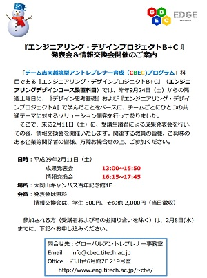

日時：平成29年2月18日(土)10:00～14:00
場所：百年記念館 1階
今年もCBECデザインエンジニアリングコンペを開催します。
詳細は【こちら】をご覧ください！
日時：平成29年2月10日(金)18:30～20:00
場所：西9号館W棟931教室
○講師：工藤博樹氏
メリービズ株式会社 CEO/代表取締役
○講義テーマ：テクノロジーで業界変革を!
○講義概要：
メリービズはどの会社でもある「事務作業」を「テクノロジー」を用いて変革しています。
事務作業の大部分は未だに属人的で、紙とペン、またはせいぜいExcelで実施されています。メリービズでは社会全体の最適化を実施し、無駄をなくすために、画像認識技術と人手を組み合わせるシステムを構築し、事務作業の徹底効率化をすすめています。その取り組みについて紹介します。
日時：平成29年2月11日(土)13:00～15:50
場所：百年記念館 1階
エンジニアリングデザイン（B/C)授業の成果発表会を開催します。

お申込みは info[at]cbec.titech.ac.jp までお願いします。
ご来場お待ちしています。
レクチャ：平成29年3月14日(火)18:00～20:00
ワークショップ：平成29年3月15日(水)16日(木)
場所：西9号館デジタル多目的ホール
今年のテーマは「Deepening the Practice of Design」です。
「デザイン思考」をより効果的に機能させるためにどのように対峙すべきなのかに焦点を当てて、話を進めます。ぜひご参加ください。
詳細は【こちら】をご覧ください！
日時：平成29年2月3日(金)18:30～20:00
場所：西9号館W棟931教室
○講師：川田 篤 氏
株式会社オロ 代表取締役社長
○講義テーマ：起業家という選択
○講義概要：
アイデアとテクノロジーを中心軸として、
クラウドサービスの提供とウェブを活用した
マーケティング支援を行っています。
事業内容のご紹介と、東工大同級生との起業を振り返り、
実体験や感じたことをお話しします。
また、ビジネスのコツや今後の環境変化について、
私の考えをお話しします。
日時：平成29年1月27日(金)18:30～20:00
場所：西9号館W棟931教室
○講師：講師:岡田 祐希氏
株式会社OKエステート 代表取締役
株式会社ワイアールジー 代表取締役
○講義テーマ：零細企業の経営から見た会社運営の要諦
○講義概要：
私自身、中小零細企業に勤め、自身で経営をしながら、数々の失敗を経験してきました。また、コンサルタントや役員としての立場で様々な会社の変遷を見てきました。
その経験の中から、創業期や規模の小さい時期に注意すべき事象や経営者として考えるべきことをお伝えしたいと思います。
なかなか教科書からは見えてこない人間的な”失敗例”をお伝えすることで、ベンチャーを創業しようとする皆さんに、落とし穴を発見する目を養っていただけると幸いです。
日時：平成29年1月20日(金)18:30～20:00
場所：西9号館W棟931教室
○講師：Michele Guarnieri氏
株式会社ハイボット取締役/研究開発部ディレクター(同社創立者の一員)
○講義テーマ：Navigating the start-up labyrinth while protecting your ideas and attracting the needed resources
○講義概要：
共同設立者として、また日本の大学の中で外国人としての自分が会社を設立したスタートアップ例を紹介。
スタートに至るまでの困難や、得ることができたもの、学び等についてもお話しする。
「ファイナンス」の開講日が当初予定より変更になっていますので、受講生はOCW-iを確認してください。
初回は、1月17日（火）18:30-20:00 です。
授業スケジュールpdf→こちら
日時：平成29年1月6日(金)18:30～20:00
場所：西9号館W棟931教室
○講師：Mohammad Umran Akhtar氏
Senior Vice President, Motorola Solutions
○講義テーマ：How to Manage "Business Transformation"
due to Fast "Technology Innovations" in a Global Company to avoid Irrelevance by Utilizing Startups.
○講義概要：
今回の講義ではMotorolaで働いた27年間の経験に基づき、企業の歴史、テクノロジーの変革、変革の必要性、予測する能力、完全なビジネス改革に導くチェンジ・マネジメント、明確なスタートアップ戦略などについて案内したい。
日時：平成28年12月16日(金)18:30～20:00
場所：西9号館W棟931教室
○講師：講師:澤山 雄一氏 2501株式会社 代表取締役CEO
○講義テーマ：「イノベーションの原点」
○講義概要：
想いひとつで世界標準をつくったエンジニア、ある社内活動から世界中のお金の流れを変えた女性、小さなムーブメントから法律までつくってしまった社会起業家...等など、リクルート時代に触れてきた何百人もの仕事観、人生観、想い、挑戦から見えてきたことをお伝えします。
日時：平成28年12月9日(金)18:30～20:00
場所：西9号館W棟931教室
○講師：後藤 裕氏（文部科学省基礎研究振興分析官）
／廣瀬 幸雄氏（金沢大学名誉教授、中谷宇吉郎雪の科学館館長）
○講義テーマ：グローバルなコーヒーが起こすイノベーション
○講義概要：
多くの人が愛してやまないコーヒーは、今や世界市場で石油に次ぐ巨大な国際的貿易商品に位置付けられ、全世界での一日当たりの消費量は約 20 億杯にもなります。
コーヒー業界の新潮流と言われるサードウェーブに注目が集まる今、コーヒーには大きなビジネスチャンスが訪れています。コーヒーが持つ“社会を変える力”、“人を変える力”、“ビジネスを変える力”などについてお話します。
Startup Weekend Tokyo Techシリーズは、Vol.5を2016年11月4～6日に開催し、大盛況のうちに終了しました．ご参加くださったみなさま、ありがとうございました．
日時：平成28年11月12日(土)14:00～16:20
場所：石川台 デザイン工房
エンジニアリング・デザイン・プロジェクトBの中間発表会を行います．受講生および関連企業の方は出席ください．
日時：平成28年11月11日(金)18:30～20:00
場所：西9号館W棟931教室
○講師：中川 健朗 氏（文部科学省サイバーセキュリティ・政策評価審議官）
○講義テーマ：科学技術イノベーションで大変革時代を切り拓く
○講義概要：
今年の夏まで、内閣府政策統括官（科学技術・イノベーション担当）をされていたご経験から、我が国のイノベーション政策について展望をお話いただきます。
2016年10月31日に開催された第3回CBECシンポジウムは大盛況のうちに終了しました．ご来場いただいたみなさまありがとうございました．
日時：平成28年10月28日(金)18:30～20:00
場所：西9号館W棟931教室
○講師：大場 智康氏（株式会社アイズファクトリー 代表取締役）
○講義テーマ：今向かっている。そして、世界を変える。
○講義概要：
東京工業大学博士課程修了後に会社を設立し、研究から経営の道を目指しました。その後、製造、営業、IT等の10数社の起業に関わりながら実践で経営を学んだ経験は、現在の弊社の経営にとても活かされています。そんな体験談をお話します。
日時：2016年10月31日(月)14:00～17:00
会場：東工大蔵前会館1階くらまえホール
テーマ：CBEC2.0に向けて
詳しくはイベントページを参照ください．
2016年度の第3クォーター以降の授業スケジュールをこちらに掲載しました。
日時：平成28年10月21日(金)18:30～20:00
場所：西9号館W棟931教室
○講師：講師：後藤 匠 氏（株式会社forEst（ふぉれすと）代表取締役CEO）
○講義テーマ：学生起業のリスクについて考える
○講義概要：
私は修士１年生の時に起業しました。
でも、実は修士１年生の夏～秋にかけて就職活動も並行して続けていました。
「ベンチャー企業を創業して会社を潰したら、人生メチャクチャになるんじゃないか」などと考えていた自分が最終的に下した決断は「事業を継続すること」でした。「就活を辞める決断をした時に考えていたこと」「今になって起業のリスクについてわかったこと」などリアルな「学生ベンチャー」の実情を、なるべくインタラクティブにお伝えします。
日時：2016年10月19日(水)18:30～21:00（18:00開場）
場所：百年記念館
"Startup Weekend は何故おもしろいか？"
これまでに参加した学生による体験談・座談会を開催！
参加費無料，ピザ・飲みもの付き
詳細 https://swtokyo.doorkeeper.jp/events/52392
日時：平成28年10月7日(金)18:30～20:00
場所：西9号館W棟3階311教室
○講師：久保田 修司 氏(株式会社トラス 代表取締役)
○講義テーマ：人類の歴史と現代の社会の仕組みを振り返りながらスタートアップの作り方を考える
○講義概要：
原始の時代に猿と変わらなかった人間がどのように現在の繁栄を手にしてきたのか、そしてスタートアップとはその社会でどのような位置付けにあるのか、現代を生きる一人の人間としてどのようなことを考え、何をしていけばスタートアップを作ることができるのかを一緒に考えてみたいと思います。
日時：平成28年9月30日(金)18:30～20:00
場所：西9号館W931号館
○講師：Antti Sonninen氏 CEO of Slush Asia
○講義テーマ：「Entrepreneurship and ambition」
○講義概要：
RovioやSlush Asiaなどの事例を用いて、国際的なスタートアップの状況、スタートアップ企業の成功要因と失敗要因について。Slush Asiaを一緒に運営している谷川ゆりかさんにも同席いただき、スタートアップ時の様々な障害とそれをどのように乗り越えるかについて、具体的な事例を挙げて説明します。
「エンジニアリング・デザイン・プロジェクトＢ」は10時開始です。
場所はデザイン工房です。
「マーケティング・サイエンス」9月29日は阿部講師のご都合により休講です。
初回授業は10月6日です。
「リーダーシップ」講義は計画通り9月26日が初回授業です。
いずれの授業も、開始時刻は18:30で場所は講義室W931です。
融合理工学系エンジニアリングデザインコースでは、
Q3・Q4の後学期に、『スタートアップ最前線』（ESD.H404）を開講いたします。
本講義は、本学に所縁のあるスタートアップファウンダーを中心に、イノべ―ション創出の最前線にいらっしゃる方々をお招きしてご講義をいただきます。
講師の皆様が熱いハートで日々奮闘していらっしゃる姿に接することで、そのパワーをいただくとともに、質疑を通じて、受講者の皆様に将来を考えるきっかけとしていただきたいと思います。
講義室：西9号館 W931号室
毎週金曜日 18:30～20:00
第1回は9月23日
講師：岡田 祐之氏 株式会社みらい創造機構 代表取締役社長
10月21日(金)・22日(土)開催の「次世代共創シンポジウム＆ワークショップ」は、次世代の担い手達と世界のリーダー達が集い、共に語り、未来を創り上げる場です。
あなたの参加をお待ちしています！参加申込締切：9/28（水）18:00
詳細はこちらをご覧ください。
以下の要領で授業の成果発表会を開催します。
日時：2016年6月4日（土）14:00～16:00
場所：中野区産業産業振興推進機構(ICTCO)
詳しくは、こちらのファイルをご覧ください
5月21日のホームカミングディで「東工大生のためのデザイン思考基礎」を開催します。
詳しくは、イベントページの開催案内をご覧ください
6月3日(金)～5日(日)に百年記念館にてStartup Weekend Tokyo Tech vol.4を開催します。
http://tokyo.startupweekend.org/
詳しくは、イベントページの開催案内をご覧ください
集中講義「デザイン思考基礎」の初回を以下の日時・場所で実施します。
4月9日（土） 10:00～15:50 百年記念館4階
また、初回以降の日程は、4/23（土）、5/7（土）、5/21（土）、5/28（土）で す（時間・場所は、初回と同じ）。また、最終回5/28（土）は講義後に懇親会を 予定しています。
問合せ先： 坂本啓 准教授
hsakamoto【あっと】mech.titech.ac.jp
（【あっと】は@に替えてください）
4月4日(月)にＥＥＩ棟（北３号館）21１会議室にて16時～17時頃までコースオリエンテーションを実施します。
4月2日（土）にエンジニアリングデザインコース コース説明会を大岡山キャンパスで実施します。説明会へのリンク
【d.school comes to Tokyo Tech 申し込み開始】先のご案内している”d.school comes to Tokyo Tech 2015”での、スタンフォード大学d.schoolの現役tutorsによる講演会「...
Posted by 東京工業大学 CBECプログラム on 2015年6月23日
【発表会報告】5月30日「製品設計・開発」の発表会を行いました。発表会は「小さな形が世界を変える」というテーマのワークショップで、デザインの発案とプロトタイピングをおこないました。参加者は、機械系と経営工学系が半々ぐらいで、...
Posted by 東京工業大学 CBECプログラム on 2015年6月17日
【d.school 募集開始です！】d.school comes to Tokyo Tech”-2-dayBOOTCAMP-”の申込受付開始します。"d.school comes to Tokyo Tech -2-day...
Posted by 東京工業大学 CBECプログラム on 2015年6月15日
【CBEC/AGL共催による米国Stanford大学/d.school講師による講演および2-day Boot Campである「d.schoo comes to Tokyo Tech 2015」開催のご案内】来月7月17-19日に、...
Posted by 東京工業大学 CBECプログラム on 2015年6月11日
CBEC/SIP共催によるデザイン思考ワークショップのご案内東京工業大学EDGEプログラム（CBEC）主催、SIPプログラム共催のデザイン思考ワークショップを下記次第にて開催致します。前回2月21日の第1回が好評であったため、今回は同内...
Posted by 東京工業大学 CBECプログラム on 2015年6月8日
チラシのPDFはこちら